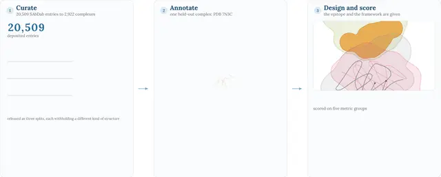
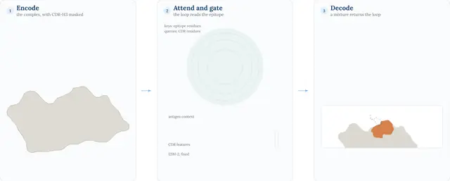
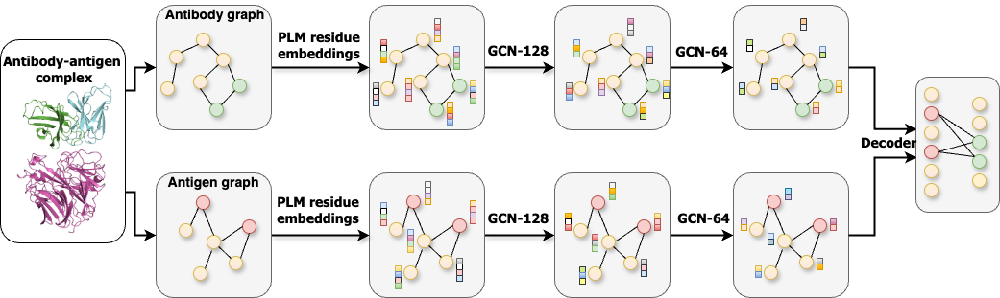
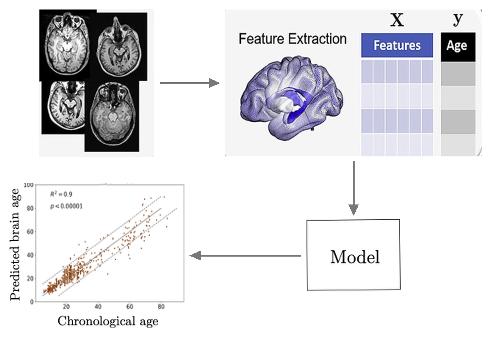

Mansoor Ahmed
Computer Science Graduate Student · Georgia State University / Georgia Tech
I am a graduate student in Computer Science at Georgia State University (joint with Georgia Tech), where I am advised by Prof. Murray Patterson at the Algorithmic Biology (AliBi) lab. My research focuses on generative ML and AI for Science, with applications to protein and antibody design. I develop theoretical ML frameworks, such as flow matching, discrete diffusion models, protein language models, and graph neural networks. My methods have wide applications for fast generation of discrete and graph data, such as text, image tokens, molecules, DNA, and antibodies. I also recently completed a research fellowship at UCLA's LUNE Lab under Prof. Jennifer Wilson.
Previously, I worked as a research assistant for one year at the Data Analytics lab at LUMS, Pakistan where I developed graph and Physics-based methods for antigen-antibody interaction, preprocessing pipelines for multi-modal MRI, and trained custom CV models for neurological disorders detection. Prior to that, I worked as a research assistant for one year at the Smart Data Systems & Applications (SDSA) lab at LUMS, where I developed the software and computer vision models for Vending Central that is now a leading vending company in Pakistan.
Research areas · click one to filter my papers
News
- Sep 2026 Latent-Kernel Discrete Diffusion accepted to the NeurIPS 2026 BeNTo workshop.
- Sept 2026 ChiMERa-Bench accepted to TMLR; previously presented at ICLR 2026 GEM workshop.
- Jun 2026 Gave a talk on AgForce at the Computational Intelligence Reading Group.
- Jun 2026 New preprint: EpiFormer for antigen-antibody interaction and epitope prediction.
- May 2026 Two papers accepted to the ICML 2026 GenBio workshop on antibody design: EvoStruct and ConTact.
- May 2026 New preprint: AgForce for antigen-conditioned generative antibody design.
- Jul 2025 Presented hierarchical relation-aware GNNs for antigen-antibody interaction at the Computational Genomics Summer Institute, UCLA.
- Sept 2025 Awarded the Molecular Basis of Disease (MBD) Fellowship at Georgia State University.
- Feb 2025 Walle++ accepted to ICCABS 2025 and the Springer LNBI post-proceedings.
Publications/Preprints
Showing papers ·

ChiMERa-Bench: A Benchmark Dataset for Epitope-Specific Antibody Design
Transactions on Machine Learning Research (TMLR), 2026
Latent-Kernel Discrete Diffusion for Few-Step Generation
NeurIPS 2026, Beyond Next‑Token Prediction (BeNTo) Workshop

ConTact: Contact-First Antibody CDR Design via Explicit Interface Reasoning
ICML 2026, Generative and Agentic AI for Biology (GenBio) Workshop
EvoStruct: Bridging Evolutionary and Structural Priors for Antibody CDR Design via Protein Language Model Adaptation
ICML 2026, Generative and Agentic AI for Biology (GenBio) Workshop

Improved Graph-Based Antibody-Aware Epitope Prediction with Protein Language Model Embeddings
ICCABS 2025 · Springer LNBI

Robust Brain Age Estimation via Regression Models and MRI-derived Features
ICCCI 2023 · Springer CCIS
Teaching
CSC 8850 — Advanced Machine Learning, GSU [Course Page]
CS 3210 — Computer Organization & Programming, GSU
CSC 8713 — Spatial and Scientific Databases, GSU
EE 212 — Mathematical Foundations for Machine Learning, LUMS [Course Page]
Talks
1. AgForce Enables Antigen-conditioned Generative Antibody Design
2. Bridging the Gap Between LLMs and LNS with Dynamic Data Format and Architecture Codesign
3. An Hierarchical and Relation-aware Graph Neural Network for Antigen-Antibody Interaction Prediction
Reviewing & Service
- Workshops: GenBio @ ICML 2026, GEM @ NeurIPS 2026, ML4H @ NeurIPS 2026, BeNTO @ NeurIPS 2026
- Conferences: AAAI 2027, ISBRA 2025; 2026, ICCABS 2025
- Journals: PeerJ Computer Science, TMLR